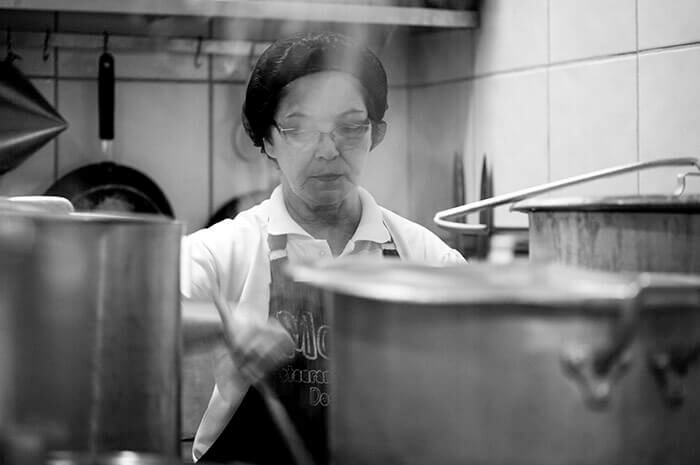
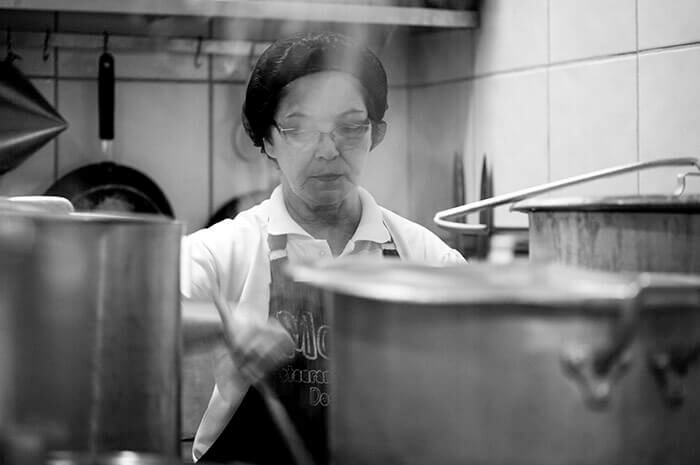
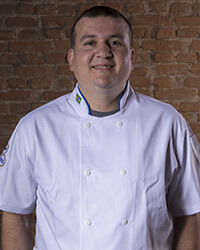
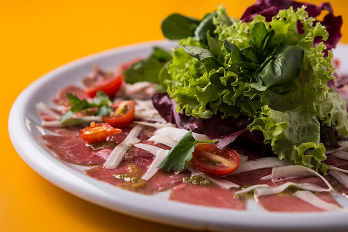
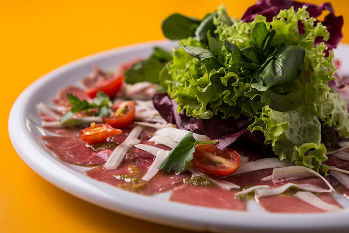
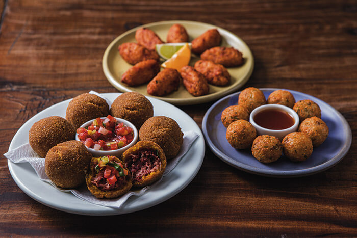
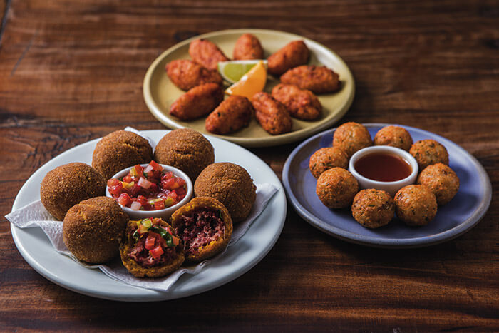

mocotó : serteneja food for different tastes
authentic flavors of Brazil

home
the restaurant
menu
team
the chef
mocotó festa
contact
gallery

the restaurant
Mocotó is a restaurant of "sertaneja" food that is in Vila Medeiros, north zone of São Paulo. It was founded as a small store, in 1973, by Jose de Almeida and today it is directed by his son, Rodrigo Oliveira. Here happens the meeting of the traditional kitchen with the innovation proposed by Rodrigo Oliveira.
Among its main concepts it is the inclusiveness. An experience for everyone, in a restaurant that welcomes the most different palates, social and cultural levels. A kitchen that, as Rodrigo Oliveira defines, “It is made with the eyes on the world and the feet grounded in ‘Sertão’.”
The recognition of the work came from different directions. It is at the 43rd place in the list of the best restaurants in Latin America by the British magazine Restaurant, it received the label of Bib Gourmand by the Michelin Guide and the best Restaurant Good and Cheap by Veja São Paulo magazine.

 

menu
team

adriana salay
She was born in Santo André. She studied history and did a Master Degree to study the Brazil food habits. She fell in love with the subject and started working with gastronomy. Today she is doing a PhD and taking care of our communication.

gean rocha
From Ceará, Amontada city, countryside of Northeast, he came with his mother to São Paulo when he was 3 years old. He entered to the Air Force where he has begun to take care of the logistics of the kitchen, from there, he moved to Mocotó and today he is responsible for our logistics department.

gilberto silva
He was born in Lagoa do Itaenga, in the state of Pernambuco. He came to São Paulo at the age of 20 and he went straight to a food distributor. He has started at Mocotó as an extra worker during the weekends washing the glasses. Today he is our sub-chef and runs the kitchen together with the chef Rodrigo Oliveira.

jonas santana
Paulistano, graduated in Logistics and attended some years of Production Engineering. Attended Gastronomy at Anhembi Morumbi. In 2016, he joined the team as an intern and then he was hired as a cook. For almost two years, he was responsible for preparing the family meal. Has a postgraduate degree in Business Management in A&B from Senac. Today is responsible for all events in the house.

paulo carvalho
He is the third generation of his family that lives in Vila Medeiros. After working in another restaurant, he has started at Mocotó to help with drinks during the weekends. Today he runs the house bar.

ricardo lima
Native of Vila Medeiros. He had done Tourism college and he is a post-graduated Master in Gastronomy Management. He had worked with events and administration. He has started at the Mocotó in 2004 in the hall, when everything was still small. Today he is our manager and partner.

sandoval soares
He was born in Palmeiras dos Índios, Alagoas. He came to São Paulo with 17 years old and had worked as a mason's helper and also in a musical instruments factory. He has started at Mocotó cleaning in 2006 and today he commands the production kitchen.
 h2>silvia guzela
h2>silvia guzela
She is from São Paulo, graduated in Gastronomy, Accounting Sciences and postgraduated in Financial Controlling. For a while, she had worked in the kitchen but chose to follow as a career the management of numbers and people. In 2012 she started at Mocotó, where she is until today as a financial manager.

seu zé almeida
He was born in 1938 in Mulungu, in the State of Pernambuco. He arrived in São Paulo at the age of 25. He had worked in several places until 1973. In this year, in partnership with two brothers, he opened the store Irmãos Almeida. This business is the forerunner of Mocotó and Seu Zé was the beginning of everything.
rodrigo oliveira
Rodrigo Oliveira was born in 1980. He is the son of a Northeast family and cook. From the age of thirteen he started going to his father’ s store to help him and he enjoyed it. He had studied gastronomy and, since 2001 has been the chef of the restaurant that tells the story of his family, Mocotó. He has already been considered one of the 100 most influential Brazilians, chef of the year, and gastronomic personality of the year.
Today he runs three more houses besides Mocotó: Mocotó Café in the Pinheiros Market, Shopping D and Balaio IMS, inside the Instituto Moreira Salles. To tell the whole story with love, he has recently released his book: "Mocotó - The father, The son and The restaurant”.

COMMERCIAL CONTACT:
crisspina@k2agencia.com

Make your party with our people, in our space or wherever you prefer!
Receptions, cocktails, birthdays, weddings, corporate events, any context we take a piece of our ground. Chef Rodrigo Oliveira's kitchen, our bar and your way wherever you are.
ASK FOR YOUR BUDGET:
jonas@mocoto.com.br
gallery


 



 



contact

+55 (11) 2951 3056
contato@mocoto.com.br
HOURS
MONDAY TO FRIDAY: 12am TO 11pm
SATURDAY: 11;30am to 11pm
SUNDAYS AND HOLIDAYS: 11:30am to 5pm
WE DO NOT ACCEPT BOOKING
Nossa Sra do Loreto Avenue, 1100
Vila Medeiros - São Paulo
SP - Brasil - CEP 02219 001
VIEW LARGER MAP
MEDIA REQUESTS:
adriana.salay@mocoto.com.br
BUSINESS REQUESTS
AND PARTICIPATIONS:
+55 (11) 2951 3056 - Ramal4
ricardo@mocoto.com.br
Do you want to work with us?
Fill out the form and we will keep your data to contact you as soon as possible.
I WANT TO WORK WITH THE MOCOTÓ!


@2020 mocotó restaurant. all rights reserved. Design by devriesdesign.com